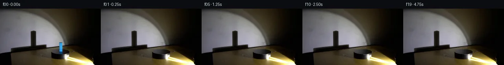

![首帧]()

Round 00
2026-11-05T17:33:58.394993+00:00像素候选变化代码 +331/−0inspection 更新
pixels ec6b115b734a24f7 · code 14161096b1e65caa
查看本轮 generate.py 真实 diff
--- previous/generate.py +++ current/generate.py @@ -0,0 +1,331 @@ +#!/usr/bin/env python3 +"""generate.py — PixelWorld-Text frame generation for case_0073. +Generates 20 frames of a blue rectangular block rotating clockwise +on a black platform, with a spotlight casting a shadow on the wall behind. +""" + +import numpy as np +from PIL import Image +import cv2 +from pathlib import Path +import sys + +# Add artifact_io helpers +sys.path.insert(0, str(Path(__file__).parent)) +from artifact_io import save + +CASE_DIR = Path(__file__).parent +H, W = 144, 256 +N_FRAMES = 20 + +# ── Load first frame ────────────────────────────────────────────── +original = np.array(Image.open(CASE_DIR / "first_frame.png")).astype(np.float32) + +# ── Block extraction ────────────────────────────────────────────── +# Blue block occupies approximately x=[149,160], y=[85,118] +# Create soft alpha from blue dominance +r, g, b = original[:,:,0], original[:,:,1], original[:,:,2] +blue_dominance = b - np.maximum(r, g) # higher = more blue + +# Define block region +BX0, BX1 = 148, 162 # slightly wider for clean extraction +BY0, BY1 = 85, 119 # slightly taller + +# Alpha: based on blue dominance in block region +alpha_full = np.zeros((H, W), dtype=np.float32) +block_slice = (slice(BY0, BY1), slice(BX0, BX1)) +bd_slice = blue_dominance[block_slice] + +# Soft alpha: 0 where bd <= 0, 1 where bd >= 30, linear in between +alpha_slice = np.clip(bd_slice / 30.0, 0.0, 1.0) +alpha_full[block_slice] = alpha_slice + +# Also include slightly darker pixels in the block's shadow transition +# Expand alpha to include the dark base of the block +for y in range(BY0, BY1): + for x in range(BX0, BX1): + if alpha_full[y, x] < 0.05: + # Check if it's part of the block's dark edge (very dark, adjacent to blue) + px = original[y, x] + brightness = px.sum() + if brightness < 30: + # Check neighbors for blue + has_blue_neighbor = False + for dy in [-1, 0, 1]: + for dx in [-1, 0, 1]: + ny, nx = y + dy, x + dx + if 0 <= ny < H and 0 <= nx < W: + if alpha_full[ny, nx] > 0.5: + has_blue_neighbor = True + if has_blue_neighbor: + alpha_full[y, x] = 0.3 # partial alpha for dark edges + +# ── Create clean plate (background without block) ──────────────── +clean_plate = original.copy() + +# Fill block region by interpolating horizontally from left/right wall +for y in range(BY0, BY1): + for x in range(BX0, BX1): + if alpha_full[y, x] > 0.01: + # Sample wall colors from left and right of the block + # Left sample: x=145-149 (wall to left of block) + left_x = max(140, BX0 - 10) + left_colors = original[y, left_x:BX0, :] + # Right sample: x=160-165 (shadow area to right) + right_x = min(W, BX1 + 10) + right_colors = original[y, BX1:right_x, :] + + # Weighted blend: closer to left gets more left influence + t = (x - BX0) / (BX1 - BX0) # 0 at left edge, 1 at right edge + # Sample from left/right in the original image at nearby x + left_sample = original[y, max(0, BX0 - 1), :] + right_sample = original[y, min(W - 1, BX1), :] + fill_color = left_sample * (1 - t) + right_sample * t + clean_plate[y, x] = fill_color + +# Smooth the fill region slightly to avoid hard edges +fill_region = (alpha_full > 0.01).astype(np.float32) … diff truncated; 244 more lines …